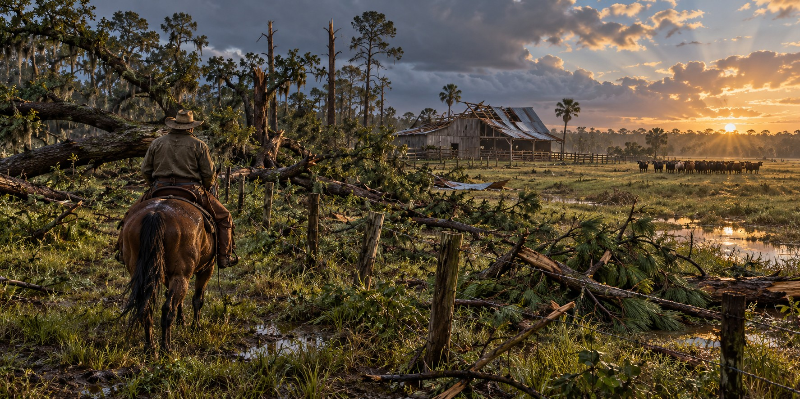

The Day the Wind Took the Barn
How Hurricanes Strike Florida’s Farms, Ranches, and Rural Communities Long After the Coastal News Cameras Leave

After Hurricane Ian, Florida ranchers faced a task that coastal photographs could not fully show: repairing the fences that kept cattle away from roads. Fallen trees and scattered debris could block access across pasture. Even where animals survived the storm, a broken perimeter changed an ordinary grazing field into an urgent safety problem.
A Fence Is Not Just a Fence
For a cattle ranch, fence repair can be one of the first recovery jobs. Loose cattle can enter neighboring land or highways. A rancher must find openings, move obstructions and restore a secure boundary while dealing with the same fuel shortages, outages and damaged roads affecting the surrounding community.
Flooded pasture and washed-out fence lines can compound wind damage. The work extends well beyond replacing a roof: livestock still need water, feed and access to safe ground while repairs continue.
Trees That Had Never Been Tested
Hurricane Michael’s 2018 strike on the Panhandle damaged agricultural buildings, timber and equipment. A large fallen tree can crush a barn, fence or irrigation system even when that structure was strong enough to withstand the wind itself.
Clearing debris, rebuilding fences and repairing irrigation are different stages of recovery. A farm may resume some daily work while longer repairs continue, and the next storm can arrive before every loss has been addressed.
A Crop the Law Will Not Let You Sell
Floodwater brings a quieter loss. Under Section 402 of the federal Food, Drug, and Cosmetic Act, any edible portion of a crop exposed to floodwater is legally adulterated, with no practical way to recondition it. After Helene, leafy greens, tomatoes, string beans and underground crops such as peanuts, potatoes and carrots became unsellable the moment floodwater touched them, whatever the wind had done to the plants.
When the Power Goes Out, So Does the Milk
Dairy farms depend on continuous electricity to cool milk and run milking equipment. Hurricane Milton’s 2024 strike disrupted production because outages prevented cooling and regular milking, even where barns and herds survived. During Helene, extended outages caused already-produced milk to spoil, a loss requiring no damage to the cattle or the barn.
Four Storms in Fourteen Months
Between August 2023 and October 2024, Hurricanes Idalia, Debby, Helene and Milton struck Florida in succession, each landing on farms still recovering from the last. Agriculture Commissioner Wilton Simpson called the cumulative effect “unprecedented financial strain.” Loss estimates depend on whether they count production, infrastructure or both; those categories should not be treated as interchangeable.
A Pattern Older Than Any Barn
Florida’s open-range cattlemen endured, in Florida Memory’s words, “burning heat, torrential thunderstorms, and hurricane winds” as an ordinary hazard of the trade. Modern producers have far better tools, including USDA hurricane preparation guides for cattle, citrus and other crops, but the basic task has changed little: walk the damaged fence line, assess the flooded field, decide which losses can wait and which cannot.
Quick Facts
| Michael (2018) | Fallen trees damaged agricultural structures and equipment |
|---|---|
| Federal crop rule | FDA: floodwater contact with edible portions makes a crop adulterated |
| Dairy risk | Power outages halt cooling and milking; milk spoils |
| 2023–2024 storms | Idalia, Debby, Helene and Milton in about 14 months |
Did You Know?
A downed ranch fence is a public-safety problem as well as a financial one, because loose cattle can reach roads.
Floodwater can make a harvest unsafe even when the plants survive.
Wind can damage a farm indirectly by dropping trees onto fences or buildings.
Vocabulary
Adulterated: in food law, unfit to sell because it has been contaminated.
Open range: land where cattle roam unfenced.
Center-pivot irrigation: a watering system that rotates around a central point to irrigate a circular field.
Discussion Questions
1. Why is repairing fences treated as the first job after a storm on a cattle ranch?
2. What kinds of hurricane damage to farms are invisible in coastal news coverage?
Related Articles
FLH-0012 — Hurricane Ian (2022)
FLH-0022 — Surviving a Storm in a Cracker Cabin
FLH-0023 — Storm Surge: Florida’s Greatest Threat
Sources
NPR / WUSF Public Media. “Hurricane Ian Has Hobbled Florida’s Agriculture Industry.” (quotes Cliff Coddington and Jim Strickland). npr.org
UF/IFAS Extension, Panhandle Agriculture. “Hurricane Michael Agricultural Damage Assessment and Economic Impacts.” nwdistrict.ifas.ufl.edu
American Farm Bureau Federation. “Double Blow to Florida Farms: Hurricane Milton Worsens Damage After Helene.” fb.org
WUSF. “Florida Agriculture Is Facing an ‘Unprecedented Financial Strain’ After Milton.” wusf.org
The Fence Post. “Farmers and Ranchers Hurting in the Wake of Hurricane Helene.” thefencepost.com
USDA Climate Hubs. “Hurricane Preparation and Recovery Guides for Florida Producers.” climatehubs.usda.gov
Florida Memory. “Florida Cattle Ranching — Earliest American Ranchers.” floridamemory.com
FDA — Evaluating flood-affected food crops
UF/IFAS — Milton production losses and infrastructure distinction